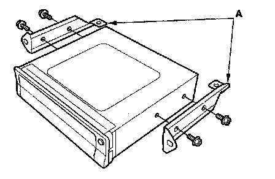

Navigation Module: Service and Repair
Navigation Unit Removal/InstallationNOTE:
- If possible, have the client record any personal information from the navigation system that will be lost.
- If the navigation unit is replaced or disconnected, a Map Match must be done.
- Dealer should do save users memory if replacing unit.
1. Remove the DVD-ROM.
2. Remove the Driver's seat.
3. Remove the two mounting nuts (A) from the navigation unit (B).
4. Remove the cover (C), then disconnect the navigation unit connectors (D).

5. Remove the bolts, and the brackets (A).
6. Install the unit in the reverse order of removal.
7. Install the DVD-ROM, then enter the 4-digit security code.
8. Do the system initialization.
9. Give the new security code to the client.